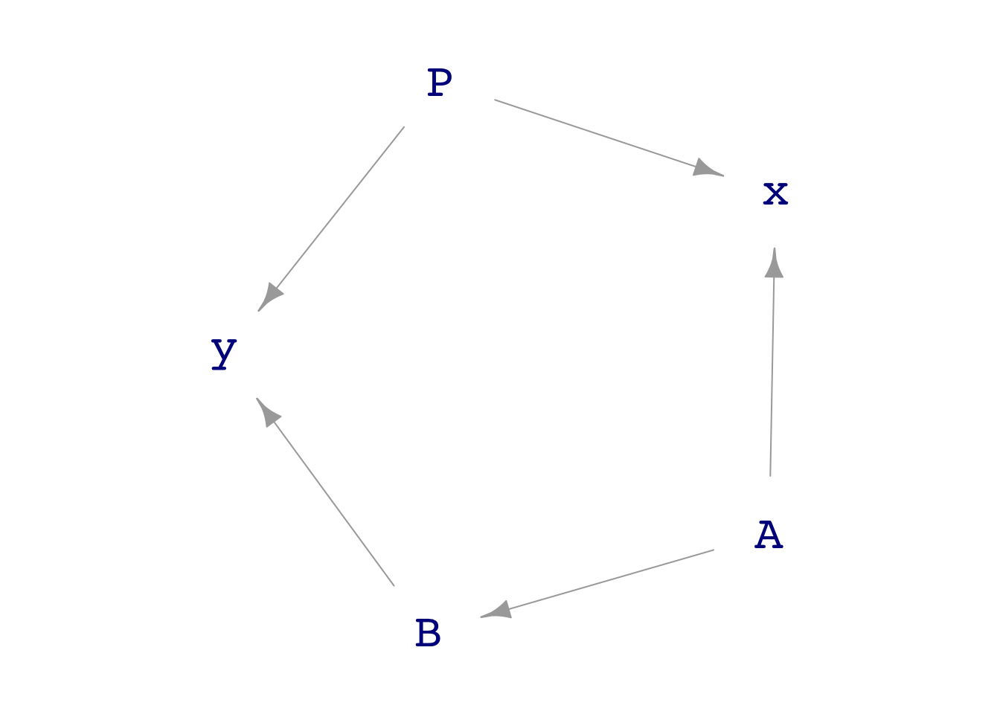

mindwave_dag <- dag_make(
P ~ 10000*(unif() + 1),
A ~ 10*unif(), # A, B, and P are all exogenous
B ~ 0*A + 100*unif(),
x ~ A/P,
y ~ B/P
)
Samp <- sample(mindwave_dag, size=1000)Math 300Z: In-class group activity
Methods of analyzing data can produce artifacts, that is, relationships between variables that are present only because of the methodological approach. We’re going to look at two ways of producing such artifacts … and how to avoid them by taking care to include or exclude appropriate covariates.
Example 1: The same quantity appearing on both sides of the tilde.
Suppose A is number of people involved in a cult and B is the number of deaths in one year.
We hypothesize \(A \longrightarrow B\) because the cult claims to foster good health of others by projecting crystaline karma via mental ergone energy waves.
We have data from many countries, and we decide to normalize both A and B by the count population P.
- \(x = A/P\ \ \) and \(\ \ y=B/P\)
Here’s a DAG:
Task I. Analyze the data in Samp with the model y ~ x (looking, as usual, at the appropriate confidence interval). Is there sign of a link between x and y?
# Put your analysis hereTask II. Study the DAG structure to figure out whether it is possible to block all pathways between x and y except pathway between x and y via A and B.

Which covariate accomplishes the blocking? Explain why.
Task III. Again analyze Samp but this time include the covariate in (II). Now is there a sign of a link between x and y?
Example 2: Colliding talents
You have been put in charge of a new project to develop an App to streamline a common administrative task. The App must (1) provide correct output and (2) be usable by minimally trained users.
Your first task is to select a team of developers. The team must be a mixture of people with two talents: (i) empathy and (ii) technical expertise. To this end, you identify 1000 potential workers and give each of them two tests: an empathy measurement and a technical expertise measurement. Here is a DAG that generates the (simulated) data:
team_dag <- dag_make(
empathy_score ~ 50*(3 + exo()),
technical_score ~ 40*(5- exo())
)
Scores <- sample(team_dag, size=1000)Task I. Is there any link between the empathy and the technical scores? Fit a model, say empathy_score ~ technical_score or the other way around. Use the confidence interval on one of the coefficients to decide whether there is a link.
Task II. Make a point plot of empathy_score ~ technical_score. Examine the shape of the “cloud” to decide if the plot points to a link between the two types of scores.
Task III. You want to assemble a strong team of people. You decide to select the 50 individuals with the largest sum of empathy and technical scores. Wrangle the Scores data frame down to a new data frame, My_team, that has the 50 highest scoring individuals. Uncomment and fill in the ....’s in the following command to accomplish the wrangling.
# My_team <- Scores |>
# mutate(total = ...) |>
# arrange(desc(......)) |>
# head(...)Task IV. Among the people in My_team, is there any link between the empathy and technical scores? Find this out by fitting the appropriate model.
Task V. Look back at your plot in Task II. By eye, identify (roughly) the points corresponding to the 50 or so people with the highest sum of scores. Draw a loop around those 50 points. Looking just at the people inside the loop, do you see a link between empathy and technical scores?